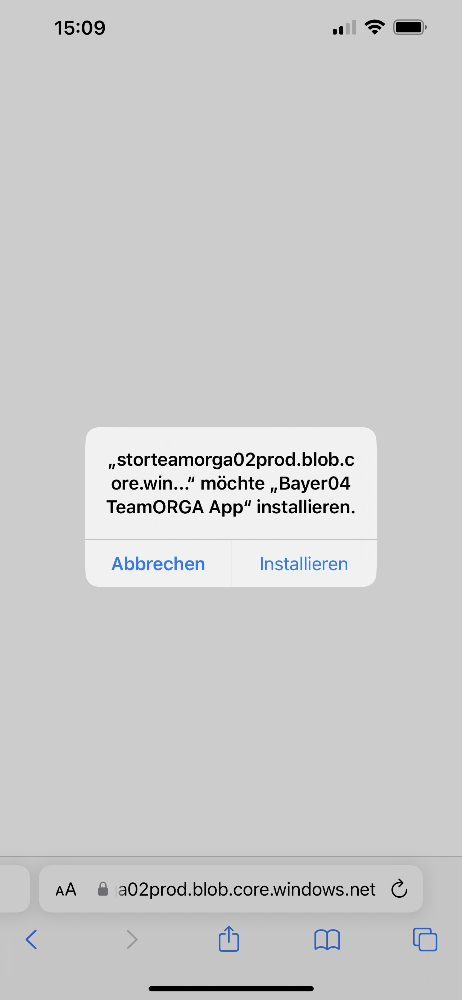
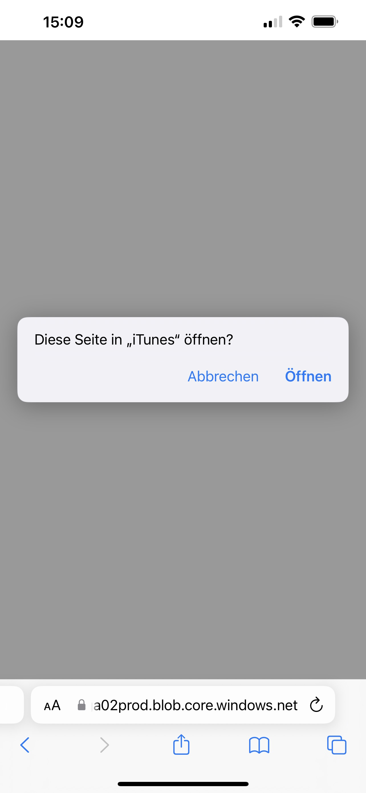
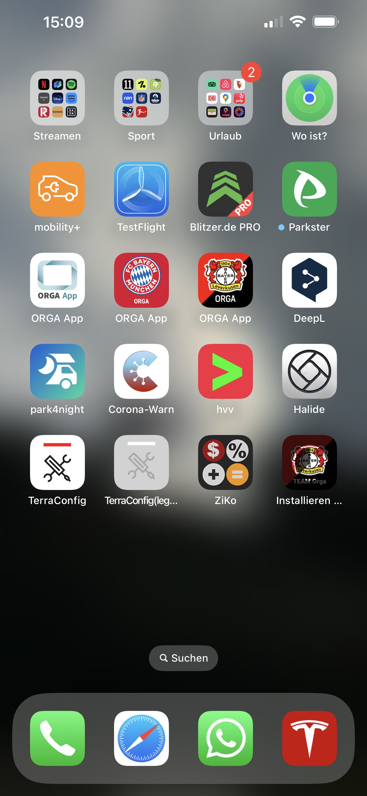
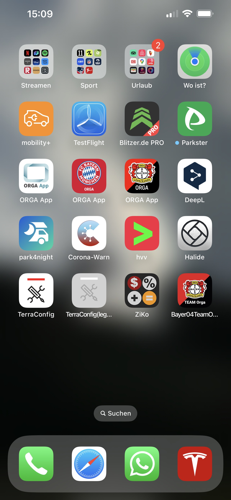

Du hast ein iPhone oder ein iPad und möchtest die TeamORGA App nutzen? Kein Problem, hier erklären wir Dir, wie das geht.
Du hast ein iPhone oder ein iPad und möchtest die TeamORGA App nutzen? Kein Problem, hier erklären wir Dir, wie das geht.
iOS VersionDie TeamORGA App ist paketiert wie jede andere App aus dem App Store, wird aber per Sideloading installiert. Daher diese Meldung, wo du einfach auf installieren drücken musst.
Dazu gehört als nächstes, dass man das Öffnen der Seite in "iTuns" zulässt, wenn gleich alles andere nun im Hintergrund passiert. Also bitte Öffnen drücken.
Die App wird nun auf Deinem Gerät installiert. Wenn Du die richtige Stelle auf Deinen Homescreens findest, sieht Du den Fortschritt. Jetzt einfach warten, bis die Installation abgeschlossen ist.
Die App wird nun auf Deinem Gerät installiert. Wenn Du die richtige Stelle auf Deinen Homescreens findest, sieht Du den Fortschritt. Jetzt einfach warten, bis die Installation abgeschlossen ist.
Natürlich gibt es die TeamORGA App auch als Handy-Version, damit Du alle Infos auch von unterwegs nutzen kannst. Termine, News, Chats - alles mobil auf Android und iPhones verfügbar.
Zur Installtion der TeamORGA App auf deinem Handy klick einfach auf den entsprechenden Button für dein Betriebssystem.